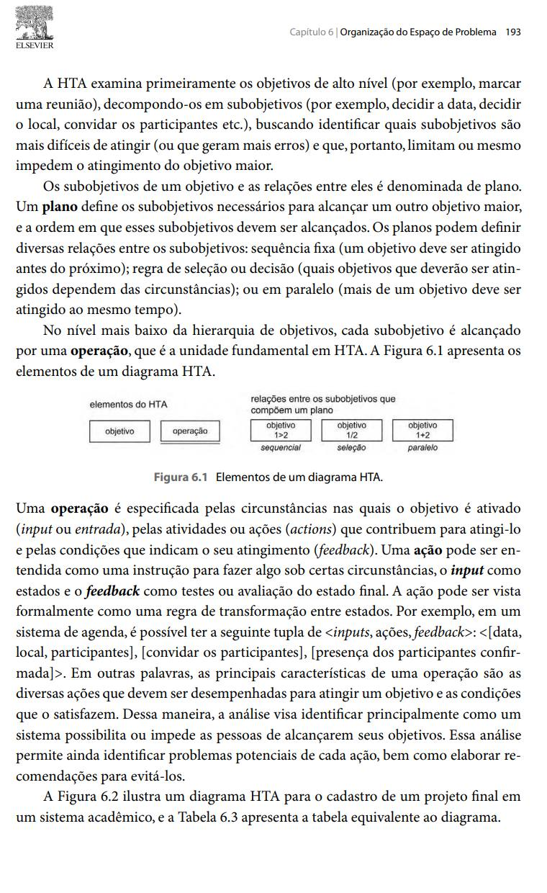
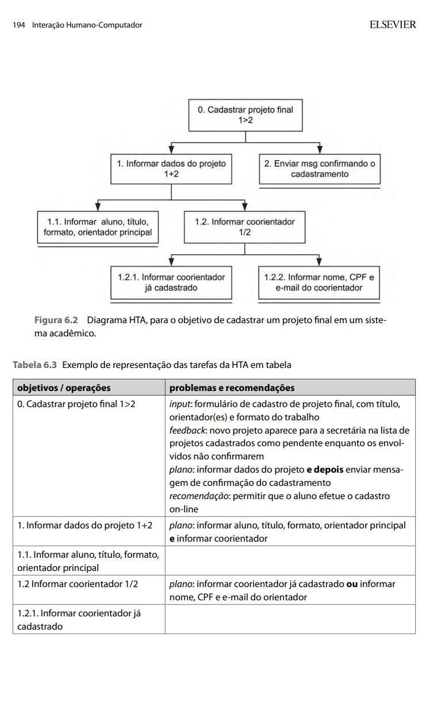
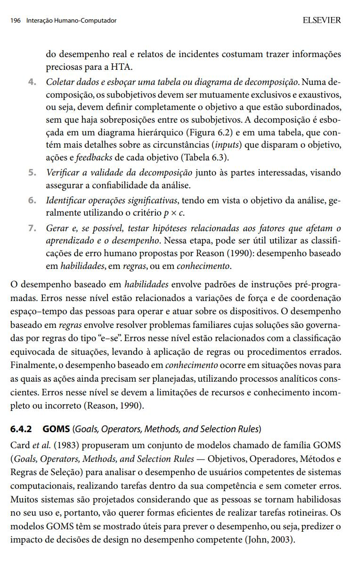

6. HTA da Avaliação de Disciplinas
Autor: Victor Andreozzi de La Rocque Couto · Revisor: Felipe Lopes Pedroza
Entrega: 2, Perfil do Usuário, Personas e Análise de Tarefas (parte individual, feita em 27/11/2026 a partir dos artefatos que Victor elaborou na Entrega 2 e na Entrega 5) · Funcionalidade de Victor no projeto: Avaliação de Disciplinas
Outros artefatos desta parte: 1. Visão geral e planejamento · 2. Coleta por brainstorming e aspectos éticos · 3. Perfil de usuário · 4. Persona Talita Farias · 5. Cenário da Avaliação de Disciplinas · 7. CTT da Avaliação de Disciplinas · 8. Verificação com as listas
1. Introdução
A Análise Hierárquica de Tarefas (HTA) decompõe um objetivo de alto nível em subobjetivos e define, por meio de planos, a ordem em que eles são alcançados: sequência fixa, regra de seleção conforme as circunstâncias ou execução em paralelo (Barbosa e Silva (2010, p. 192–193). No nível mais baixo, cada subobjetivo é uma operação, especificada por entrada (input), ações e feedback (p. 193). A HTA é apresentada como diagrama e como tabela (p. 194), e o livro sugere examinar os erros humanos pela classificação de Reason (p. 196). As Figura 12, Figura 13 e Figura 14 mostram esses trechos.
Esta HTA é a da Avaliação de Disciplinas, a funcionalidade que Victor entregou no protótipo de alta fidelidade da Entrega 7. Ela parte da HTA da Entrega 5, incorpora os problemas encontrados na avaliação da análise de tarefas da Entrega 5 e corrige a DI-04 da inspeção de Felipe: os planos agora têm regras de seleção para os passos condicionais.

Fonte: BARBOSA, S. D. J.; SILVA, B. S. Interação Humano-Computador. Rio de Janeiro: Elsevier, 2010. Página: 193, Capítulo 6. Organização do Espaço de Problema, seção 6.4.1.

Fonte: BARBOSA, S. D. J.; SILVA, B. S. Interação Humano-Computador. Rio de Janeiro: Elsevier, 2010. Página: 194, Capítulo 6. Organização do Espaço de Problema, seção 6.4.1.

Fonte: BARBOSA, S. D. J.; SILVA, B. S. Interação Humano-Computador. Rio de Janeiro: Elsevier, 2010. Página: 196, Capítulo 6. Organização do Espaço de Problema, seção 6.4.1.
2. Diagrama
A Figura 15 segue a notação do livro: o número de cada objetivo, o plano abaixo do nome e as operações (folhas) sublinhadas. Nos planos, > indica sequência, / indica escolha (regra de seleção), + indica que os objetivos podem ser feitos em qualquer ordem ou em paralelo, e os parênteses indicam um objetivo opcional.
![Diagrama HTA: 0 Avaliar uma disciplina já cursada, com plano 1, 2 opcional, 3 e 4, e 5 a qualquer momento. 1 Localizar a disciplina: 1.1 abrir Avaliações, 1.2 buscar por código ou nome, 1.3 filtrar por departamento ou professor, 1.4 escolher a disciplina. 2 Consultar as avaliações dos colegas, opcional: 2.1 abrir Ver avaliações, 2.2 ler médias e comentários. 3 Preencher a avaliação: 3.1 nota de dificuldade, 3.2 nota de cobrança, 3.3 semestre e professor, opcional, 3.4 comentário anônimo, opcional. 4 Revisar e enviar: 4.1 clicar em Revisar e enviar, 4.2 conferir o resumo e o termo de anonimato, 4.3 confirmar o envio, 4.4 voltar e editar. 5 Descartar a avaliação, opcional: 5.1 clicar em Descartar, 5.2 confirmar no diálogo.](img/entrega2/v-hta-avaliacao-disciplinas.svg)
Fonte: Victor Andreozzi de La Rocque Couto (2026). Clique na figura para abri-la em tamanho original.
3. Planos
| Plano | Descrição |
|---|---|
| 0 | Fazer 1. Se a disciplina mostrar “Você já avaliou”, encerrar (só uma avaliação por disciplina). Se o estudante quiser comparar com os colegas, fazer 2. Depois, 3 e 4. Se desistir em qualquer ponto entre 1 e 4, fazer 5 |
| 1 | Fazer 1.1. Se souber o código ou parte do nome, fazer 1.2; se souber só o departamento ou o professor, fazer 1.3; senão, rolar a lista. Depois, 1.4. Se a busca não trouxer resultados, aceitar a sugestão “Você quis dizer…?” ou limpar a busca e os filtros e repetir |
| 2 | Fazer 2.1 e depois 2.2. O resumo das avaliações continua visível ao lado do formulário durante 3 |
| 3 | Fazer 3.1 e 3.2 em qualquer ordem (ambas obrigatórias). Depois, 3.3 e 3.4, em qualquer ordem e só se o estudante quiser |
| 4 | Fazer 4.1. Se faltar uma nota obrigatória, voltar a 3. Fazer 4.2. Se algo estiver errado, fazer 4.4 e voltar a 3; senão, fazer 4.3. Se o envio falhar, repetir 4.3 com “Tentar novamente” |
| 5 | Fazer 5.1 e depois 5.2. Se escolher “Continuar avaliando”, voltar ao ponto em que estava |
Fonte: Victor Andreozzi de La Rocque Couto (2026).
4. Tabela da HTA
A Tabela 14 especifica cada objetivo e operação com a entrada, as ações do estudante e a resposta do sistema. Como a tarefa envolve dois agentes, as ações do estudante e as do sistema ficam em colunas separadas. Os textos dos botões são os do protótipo de alta fidelidade.
| Objetivo ou operação | Entrada (quando começa) | Ações do estudante | Resposta do sistema (feedback) |
|---|---|---|---|
| 0. Avaliar uma disciplina já cursada | Fim do semestre, ou vontade de ajudar colegas | Abrir o NoFluxo UnB com login | Tela inicial com “Avaliar disciplina” e o item “Avaliações” no menu |
| 1.1. Abrir “Avaliações” | Tela inicial ou qualquer página | Clicar em “Avaliar disciplina” ou em “Avaliações” | Lista de disciplinas com busca, filtros e médias |
| 1.2. Buscar por código ou nome | Sabe o código ou parte do nome | Digitar na busca, com ou sem acento | Resultados com contagem; sugestão “Você quis dizer…?” para erros de digitação |
| 1.3. Filtrar por departamento ou professor | Sabe só o departamento ou o professor | Escolher os filtros | Lista reduzida; os filtros continuam ao voltar |
| 1.4. Escolher a disciplina | Disciplina visível na lista | Clicar em “Avaliar” no resultado | Formulário da disciplina; ou o botão “Avaliada” e o selo “Você já avaliou”, se já foi avaliada |
| 2.1. Abrir “Ver avaliações” | Quer comparar antes de avaliar | Clicar em “Ver avaliações” | Página da disciplina com médias e comentários |
| 2.2. Ler médias e comentários | Página da disciplina aberta | Ler e rolar | Médias de dificuldade e de cobrança, número de avaliações e comentários anônimos |
| 3.1. Nota de dificuldade | Formulário aberto | Escolher de 1 (“Muito fácil”) a 5 (“Muito difícil”) | “Você escolheu: 4 · Difícil” |
| 3.2. Nota de cobrança do professor | Formulário aberto | Escolher de 1 (“Muito baixa”) a 5 (“Muito alta”); se tiver dúvida, abrir “O que é cobrança?” | Rótulo da nota escolhida; dica: “Quanto o professor exige dos alunos: volume de listas e trabalhos, rigor na correção e nível das provas. Não é uma nota para o professor.” |
| 3.3. Semestre e professor | Quer contextualizar a avaliação | Escolher o semestre e o professor | Campos preenchidos |
| 3.4. Comentário anônimo | Quer explicar as notas | Escrever até 500 caracteres | Contador de caracteres |
| 4.1. Revisar e enviar | Notas preenchidas | Clicar em “Revisar e enviar” | Resumo com o termo de anonimato no topo; ou mensagem junto à escala que falta |
| 4.2. Conferir o resumo | Resumo aberto | Ler notas, semestre, professor e comentário | Indicador de etapas em “Revisar” |
| 4.3. Confirmar o envio | Resumo correto | Clicar em “Confirmar envio” | “Enviando…” e depois “Avaliação concluída!”; ou “Não foi possível enviar sua avaliação.” com “Tentar novamente” |
| 4.4. Voltar e editar | Algo errado no resumo | Clicar em “Voltar e editar” | Formulário com os dados preservados |
| 5.1. Clicar em “Descartar” | Quer desistir | Clicar em “Descartar” na barra inferior | Diálogo “Descartar avaliação?”, com o foco em “Continuar avaliando” |
| 5.2. Confirmar no diálogo | Diálogo aberto | Confirmar o descarte | Rascunho apagado e aviso de descarte |
Fonte: Victor Andreozzi de La Rocque Couto (2026).
5. Problemas, recomendações e validação
A Tabela 15 registra os problemas de desempenho de cada objetivo e a recomendação de design. Os problemas B-01 a B-07 vêm da avaliação da análise de tarefas da Entrega 5 (Percurso Cognitivo e checagem com o participante P1 em 23/10/2026); as recomendações foram implementadas no protótipo e avaliadas com cinco participantes na avaliação do protótipo de alta fidelidade da Entrega 7.
| Objetivo | Problema | Recomendação (implementada no protótipo) |
|---|---|---|
| 0 e 5 | B-01: não havia rota para descartar o rascunho, e o estudante podia sair sem saber se perdeu o que escreveu | “Descartar” sempre visível, com diálogo de confirmação e foco no botão seguro |
| 4.1 e 4.3 | B-02: o botão de confirmar podia ficar fora da área visível, sem indicação de processamento | Envio em duas etapas (revisão e confirmação), com “Enviando…” |
| 2 e 3 | B-03: era preciso terminar a consulta antes de preencher, o que exigia memorizar as médias | Resumo das avaliações ao lado do formulário |
| 3 e 4.2 | B-04: o anonimato só aparecia na revisão final | Aviso de anonimato no topo do formulário e no topo da revisão |
| 1.2 e 1.3 | B-05: sem filtros, a lista de disciplinas ficava extensa | Filtros por departamento e professor e busca tolerante a erros de digitação |
| 3.1 e 3.2 | B-06: os extremos da escala não tinham rótulo, e “cobrança” podia ser confundida com presença | Escalas rotuladas e dica “O que é cobrança?” |
| 3.4 | B-07: a mensagem de limite de caracteres era vaga | Contador de caracteres e limite de 500 |
Fonte: Victor Andreozzi de La Rocque Couto (2026), a partir da avaliação da análise de tarefas da Entrega 5 e do protótipo da Entrega 7.
Validação com as partes interessadas. A decomposição foi mostrada ao participante P1 na sessão de 23/10/2026, que confirmou a ordem das tarefas (“não tem como você avaliar sem antes localizar a disciplina”). Os caminhos da HTA (avaliar sem busca, buscar e avaliar, começar e desistir) foram as três tarefas das sessões com os participantes P1 a P5 da avaliação do protótipo de alta fidelidade da Entrega 7. A validação com especialista em IHC, prevista no planejamento da Entrega 5, foi feita com o professor da disciplina, que ministra Interação Humano-Computador.
6. Erros humanos (Reason)
A Tabela 16 antecipa erros nas operações com base nos três níveis de desempenho de Reason (1990), citados pelo livro (p. 196).
| Nível de desempenho | Erro previsto | Operação | Prevenção no design |
|---|---|---|---|
| Baseado em habilidades | Tocar na nota vizinha da escala no celular (por exemplo, 5 em vez de 4) | 3.1 e 3.2 | Rótulo da nota escolhida e revisão antes do envio (4.2) |
| Baseado em habilidades | Confirmar o descarte sem querer | 5.2 | Foco inicial em “Continuar avaliando” |
| Baseado em regras | Aplicar a regra “cobrança é presença” e dar a nota errada | 3.2 | Dica “O que é cobrança?” |
| Baseado em regras | Avaliar a disciplina pensando em outro professor da mesma disciplina | 3.3 | Campo de professor e resumo com o professor escolhido |
| Baseado em conhecimento | Não achar a disciplina por não saber o nome oficial (por exemplo, buscar uma sigla) | 1.2 | Busca por siglas e famílias de palavras e sugestão “Você quis dizer…?” |
| Baseado em conhecimento | Achar que a avaliação identifica o estudante e desistir | 3 e 4 | Aviso de anonimato explicando para que serve o login |
Fonte: Victor Andreozzi de La Rocque Couto (2026).
7. Referências
- BARBOSA, Simone Diniz Junqueira; SILVA, Bruno Santana da. Interação Humano-Computador. Rio de Janeiro: Elsevier, 2010.
- GRUPO 02. Entrega 2: Perfil do Usuário, Personas e Análise de Tarefas (documento do grupo, versões 1.0 a 1.10). Universidade de Brasília, 2026. Disponível em: <https://interacao-humano-computador.github.io/2026.2-Grupo02/entrega2.html>.
- PEDROZA, Felipe Lopes. Inspeção dos artefatos de Victor Andreozzi de La Rocque Couto (Entregas 2 a 7). Universidade de Brasília, 2026. Disponível em: <https://interacao-humano-computador.github.io/2026.2-Grupo02/docs/Grupo2InspecaoArtefatosVictorPorFelipe.pdf>.
Histórico de versão
| Versão | Data | Descrição | Autor(es) | Revisor(es) | Declaração de ferramenta de IA |
|---|---|---|---|---|---|
| 1.0 | 27/11/2026 | Parte individual da Entrega 2: HTA da Avaliação de Disciplinas, com diagrama, planos com regras de seleção, tabela, problemas, validação e erros (correção da DI-04) | Victor Andreozzi de La Rocque Couto | Felipe Lopes Pedroza | Claude (Anthropic): leitura da transcrição automática do vídeo da sessão, contagem das menções, organização das páginas e das tabelas a partir dos artefatos de Victor na Entrega 2 e na Entrega 5 e captura das páginas do livro; a escolha da técnica, as decisões de projeto e as conclusões são do autor |